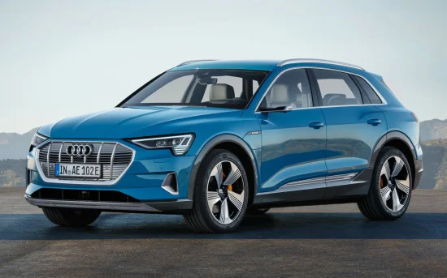
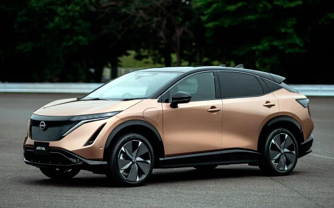

и’Kona стиля от Hyundai

В сентябре 2020-го корейцы представили модернизированный кроссовер, которому «освежили» экстерьер и интерьер, немного «перетряхнули» моторную гамму, а также отделили новых опций, не доступных прежде.
ЭлектроКроссКупе Audi e-tron
Audi e-tron – полноприводный премиум-SUV полноразмерной категории с полностью электрической силовой установкой, который, в первую очередь, ориентирован на обеспеченных людей, идущих в ногу со временем и ценящих ходовые характеристики автомобиля, но при этом уделяющих пристальное внимание экологии.
ЭлектроКроссКупе Nissan Ariya
Nissan Ariya – передне- или полноприводный электрический купе-кроссовер C-класса (по европейским меркам) «со спортивным уклоном», который сам японский автопроизводитель называет не иначе как «новой главой для бренда»… Он может похвастать эффектным дизайном, современным салоном, а также прогрессивной технологической и технической составляющей.